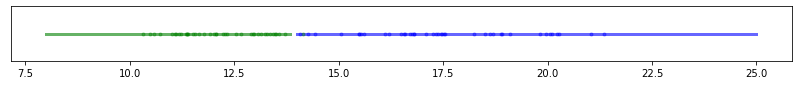
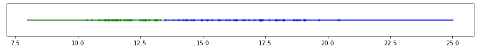
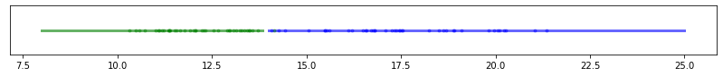
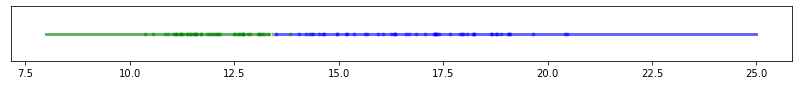
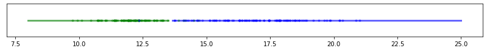
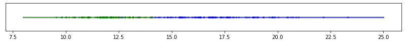
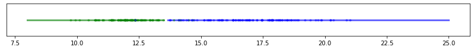
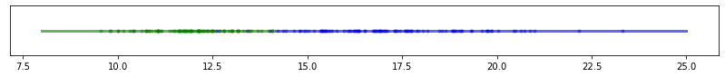
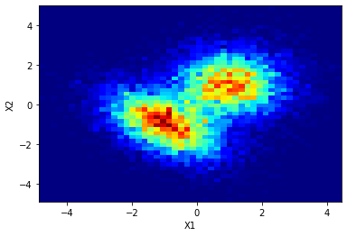
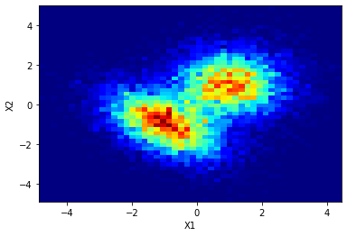

1 Dimension
Contents

import sklearn
import numpy as np
import pandas as pd
import matplotlib.pylab as plt
import seaborn as sns
from scipy import stats
from scipy import optimize
from scipy.stats import norm
#plt.rcParams['text.usetex'] = True
"""
Este notebook es reproducido con base al curso del profesor
Raul Pollar
github:https://github.com/rramosp/20182.mldl
# Machine Learning
Para mas detalles y complemento ver:
Notas: https://rramosp.github.io/ai4eng.v1/intro.html
#Machine Learning online
"""
'\nEste notebook es reproducido con base al curso del profesor \nRaul Pollar\ngithub:https://github.com/rramosp/20182.mldl\n# Machine Learning\n\nPara mas detalles y complemento ver:\n\nNotas: https://rramosp.github.io/ai4eng.v1/intro.html\n#Machine Learning online\n\n'
1 Dimension¶
#Supongamos que tenemos datos los cuales siguen una distribucion de probabilidad
# normal, emplemos la libreria stats norm de scipy:
# https://docs.scipy.org/doc/scipy-0.13.0/reference/generated/scipy.stats.norm.html
#The location (loc) keyword specifies the mean.
#The scale (scale) keyword specifies the standard deviation.
def pdf(x, mean1 = 10, mean2=12, desv1=2, desv2=2):
fig, ax = plt.subplots(1, 1)
f1 = stats.norm(loc = mean1, scale = desv1)
f2 = stats.norm(loc = mean2, scale = desv2)
ax.plot(x, f1.pdf(x),'g-', lw = 3, alpha = 0.6, label='pdf 1')
ax.plot(x, f2.pdf(x),'b-', lw = 3, alpha = 0.6, label='pdf 2')
ax.set_xlabel("x")
ax.set_ylabel("PDF(X)")
return "Done", f1, f2
x=np.linspace(5, 30,100)
_, f1, f2 = pdf(x, mean1 = 12, mean2 = 17, desv1 = 1, desv2 = 2)
plt.legend()
<matplotlib.legend.Legend at 0x1e09a8bfb20>

¿como se puede encontrar la frontera en este caso?
#Determinemos el minimo
plt.plot(abs(f2.pdf(x)-f1.pdf(x))[25:60])
[<matplotlib.lines.Line2D at 0x1e09b0b9ae0>]

index_min = np.argmin(abs(f2.pdf(x)-f1.pdf(x))[25:60])
f_min = min(abs(f2.pdf(x)-f1.pdf(x))[25:60])
print(f"index min :{index_min}, function min : {f_min}")
index min :10, function min : 0.01644600381255973
#x = np.linspace(5, 30,1000)
_, f1, f2 = pdf(x, mean1 = 12, mean2 = 17, desv1 = 1, desv2 = 2)
plt.plot(x,abs(f2.pdf(x)-f1.pdf(x)), "r-", alpha=0.5, label="(f2-f1)")
xmin_=x[25+index_min]
plt.vlines(xmin_, 0, 1, alpha=0.8)
plt.ylim(0,0.4)
plt.legend()
<matplotlib.legend.Legend at 0x1e09b0bb430>

La función de distribucion cumulativa, viene dada por:
plt.plot(x, f1.cdf(x))
plt.plot(xmin_, f1.cdf(xmin_),"ro", alpha=0.8)
plt.plot(x,f2.cdf(x))
plt.plot(xmin_,f2.cdf(xmin_),"bo", alpha=0.8)
plt.plot(x, f1.pdf(x), color="red", label="pop 1", alpha=0.8)
plt.plot(x, f2.pdf(x), color="blue", label="pop 2",alpha=0.8)
plt.xlim()
plt.ylabel("CDF")
plt.xlabel("x")
plt.legend()
plt.show()

# El error puede ser calculado como :
e1 = 1-f1.cdf(xmin_)
e2 = f2.cdf(xmin_)
#Error asociado a cada distribucion de probabilidad
print(f"{e1*100:.2f} % {e2*100:.1f} % ")
3.30 % 5.7 %
Analicemos otra situación, aplicando un algoritmo de machine learning:
# Supongamos que tenemos un sistema que puede arrojar valores binario,
# de esta manera tenemos que dada una variable aleatoria r,el sistema
# valor determinado. # Volviendo a las distrubicione normales del principio, tenemos que:
x = np.linspace(5, 30,100)
_, f1, f2 = pdf(x, mean1 = 12, mean2 = 17, desv1 = 1, desv2 = 2)

Elijamos un conjunto de valores
random_1 = f1.rvs(1000)
random_2 = f2.rvs(1000)
plt.figure()
plt.hist(random_1, density=True)
plt.plot(x, f1.pdf(x))
plt.hist(random_2, density=True)
plt.plot(x, f2.pdf(x))
plt.show()
#Generamos N datos para cada distribucion de probabilidad a partir de variables
# aleatorias
m = 100 # training values
random_1 = f1.rvs(m) #m variables aleatorias pertenecientes a la clase 1
random_2 = f2.rvs(m) #m variables aleatorias pertenecientes a la clase 2
X = np.zeros(2*m)
X[0:m] = random_1
X[m:2*m] = random_2 # Construccion de vector con la caracteristica 1
Y = np.zeros(2*m) # Valor asociada a la caracteristica 1
Y[m:2*m] = np.ones(m)
El dataset anterior puede ser escrito como:
Y |
X_1 |
|---|---|
$Y^{1}$ |
$X_1^{1}$ |
$Y^{2}$ |
$X_1^{2}$ |
. |
. |
. |
. |
. |
. |
$Y^{m}$ |
$X_1^{m}$ |
#De forma grafica puede ser entendido asi:
plt.figure(figsize=(14,1))
plt.plot(X[Y==0],np.zeros(m),"go", alpha=0.4)
plt.plot(X[Y==1],np.zeros(m),"bo", alpha=0.4)
plt.yticks([])
([], [])

¿Como podemos determinar la frontera?
Empleemos diferentes algoritmos para hacerlo:
from sklearn.tree import DecisionTreeClassifier
X = X.reshape(-1, 1)
clf = DecisionTreeClassifier(max_depth = 1) # Estimador
clf = clf.fit(X, Y) # Fit
print(f"Score: {clf.score(X, Y)}") # Score
clf.predict(f2.rvs(1).reshape(1, -1)) # prediction
Score: 0.955
array([1.])
# Ya se pueden realizar predicciones.
# Supongamos un nuevo valor perteneciente a al distrubcion 2, asi:
x_test = f2.rvs(100).reshape(1, -1) # Valor para probar
# Lo anterior implica que de la clase f2, los valores que se deberian esperar
# son iguales al valor 1, la prediccion que tenemos nos dice que:
clf.predict(x_test.T) # La prediccion
array([1., 1., 0., 1., 1., 1., 1., 1., 1., 1., 1., 0., 1., 1., 1., 1., 1.,
1., 0., 1., 1., 1., 0., 1., 1., 1., 1., 0., 1., 1., 0., 1., 0., 1.,
1., 0., 1., 1., 1., 1., 1., 1., 1., 0., 1., 0., 1., 1., 1., 1., 1.,
0., 1., 1., 1., 1., 1., 1., 1., 1., 1., 1., 1., 1., 1., 1., 1., 1.,
1., 1., 1., 1., 0., 1., 1., 1., 1., 1., 1., 1., 1., 1., 1., 0., 1.,
1., 1., 1., 1., 0., 1., 1., 1., 1., 1., 0., 1., 1., 1., 1.])
Analicemos gráficamente las fronteras:
# dado un nuevo conjunto de puntos, ¿que puede estimar el algoritmo?
Xr = np.linspace(8, 25, 100).reshape(-1,1) # Para un nuevo conjunto de datos, tentemos que la prediccion es:
yr = clf.predict(Xr)
plt.figure(figsize=(14,1))
plt.plot(Xr[yr==0], np.zeros(len(Xr[yr==0]) ),color="g" ,alpha=0.1, lw=3 ) # GRaficando la prediccion para el conjunto de datos, para los de tipo 0
plt.plot(Xr[yr==1], np.zeros(len(Xr[yr==1]) ), color="b",alpha=0.1, lw =3 ) # GRaficando la prediccion para el conjunto de datos, para los de tipo 1
plt.plot(X[Y==0],np.zeros(m),"go", alpha = 0.4) # Valores aleatorios # Valores de entrenamiento
plt.plot(X[Y==1],np.zeros(m),"bo", alpha = 0.4) # Valores de test
[<matplotlib.lines.Line2D at 0x1e09b75f9a0>]
Tarea¶
Definir una función que permita determinar m valores de entrenamiento dado un m, Para f1, f2 definidos como:
f1 = stats.norm(loc = mean1, scale = desv1)
f2 = stats.norm(loc = mean2, scale = desv2)
Emplee los valores de mean1=12, mean1=17, con desv1=1, desv2=2
Con base en ello, construya una función de python, que permita determinar la predicción empleando un DesicionTreeClasifier
def train_values(m)
"""
Params m
Return X, y
"""
return X, y
def main(X, y, Xr, m):
"""
Params:
X : Features values
y : training values for each features
Xr : np.linspace(5, 25, 100).reshape(-1, 1) New Values for prediction
m : len of value of training
Return :
yr: Prediction
"""
return yr
Con la función construida realice los siguientes experimentos:
Elija diferentes valores m entre (10 , 100). ¿Cómo se compara la frontera Bayesiana respecto a los valores determinados?
Eliga m=100, realice un muestreo para 10 experimentos, ¿Cómo se compara la frontera Bayesiana respecto a los valores determinados?
#En resumen
def train_values(m = 100):
random_1 = f1.rvs(m) #m variables aleatorias pertenecientes a la clase 1
random_2 = f2.rvs(m) #m variables aleatorias pertenecientes a la clase 2
X = np.zeros(2*m)
X[0:m] = random_1
X[m:2*m] = random_2 # Construccion de vector con la caracteristica 1
y = np.zeros(2*m) # Valor asociada a la caracteristica 1
y[m:2*m] = np.ones(m)
return X, y
def main(X, y, Xr, m):
#X, y = train_values(100)
clf = DecisionTreeClassifier(max_depth = 1)
clf = clf.fit(X.reshape(-1, 1), y)
# Xr = np.linspace(8,25, 100 ).reshape(-1, 1)
yr = clf.predict(Xr)
plt.figure(figsize=(14,1))
plt.plot(Xr[yr==0], np.zeros(len(Xr[yr==0]) ), color="g", alpha=0.6, lw=3 ) # GRaficando la prediccion para el conjunto de datos, para los de tipo 0
plt.plot(Xr[yr==1], np.zeros(len(Xr[yr==1]) ), color="b", alpha=0.6, lw =3 ) # GRaficando la prediccion para el conjunto de datos, para los de tipo 1
plt.plot(X[y==0],np.zeros(m),"g.", alpha = 0.4) # Valores aleatorios # Valores de entrenamiento
plt.plot(X[y==1],np.zeros(m),"b.", alpha = 0.4) # Valores de test
plt.yticks([])
plt.show()
# Para diferentes valores de entrenamiento, el resultado es el siguiente:
m = np.arange(10, 60, 10)
for m_ in m:
X, y = train_values(m_)
Xr = np.linspace(8,25, 100 ).reshape(-1, 1)
main(X, y, Xr,m_)

 



# Realicemos un muestreo para m valores 10 experimentos
m = 100*np.ones(5)
for m_ in m:
m_=int(m_)
X, y = train_values(m_)
Xr = np.linspace(8,25, 100 ).reshape(-1, 1)
main(X, y, Xr,m_)
 



2 Dimensiones¶
Caso Bivariante
$\rho$ coeficiente de correlación, media es $(0, 0)$
La matriz de covarianzas viene dada por:
Otra forma de escribirla puede ser como sigue
El caso más general viene dado por:¶
En el caso más general tenemos que :
$|\Sigma|$ es el determinante de la matrix de covarianza,
# https://docs.scipy.org/doc/scipy/reference/generated/scipy.stats.multivariate_normal.html
import matplotlib.pyplot as plt
from scipy.stats import multivariate_normal
import matplotlib.pyplot as plt
from matplotlib import cm
from matplotlib.ticker import LinearLocator
import numpy as np
from sklearn.model_selection import train_test_split
Funcion de distribucion de probabilidad 1D¶
x = np.linspace(0, 5, 100, endpoint=False)
y = multivariate_normal.pdf(x, mean = 2.5, cov = 0.25);
f1 = stats.norm(loc = 2.5, scale = np.sqrt((0.25)))
fig1 = plt.figure()
ax = fig1.add_subplot(111)
ax.plot(x, y)
ax.plot(x,f1.pdf(x))
ax.set_xlabel("X")
ax.set_ylabel("PDF(X)")
Text(0, 0.5, 'PDF(X)')

Funcion de distribucion de probabilidad 2D¶
x, y = np.mgrid[-4:4:.1, -4:4:.1]
pos = np.dstack((x, y))
mu = [0.0, 0.0] # Centrada en el origen
cov = [[1.0, 0.0], [0.0, 1.0]] # Matriz de covarianzas identidad
rv = multivariate_normal(mu, cov)
x1, y1 = np.mgrid[-4:4:.1, -4:4:.1]
pos1 = np.dstack((x1, y1))
mu1 = [0.0, 0.0] # Centrada en el origen
cov1 = [[1.0, -0.5], [-0.5, 1.0]] # Matriz de covarianzas identidad
rv1 = multivariate_normal(mu1, cov1)
x2, y2 = np.mgrid[-4:4:.1, -4:4:.1]
pos2 = np.dstack((x2, y2))
mu2 = [0.0, 0.0] # Centrada en el origen
cov2 = [[1.0, 0.8], [0.8, 1]] # Matriz de covarianzas identidad
rv2 = multivariate_normal(mu2, cov2)
# Set up a figure twice as tall as it is wide
fig = plt.figure(figsize = (12,10))
ax = fig.add_subplot(2, 3, 1, projection='3d')
#fig, ax = plt.subplots(subplot_kw={"projection": "3d"})
surf = ax.plot_surface(x,y, rv.pdf(pos), cmap = cm.coolwarm,
linewidth = 0, antialiased = False)
ax.set_xlabel("$X_1$")
ax.set_ylabel("$X_2$")
ax.set_zlabel("$PDF(X_1,X_2)$")
ax = fig.add_subplot(2, 3, 2, projection='3d')
#fig, ax = plt.subplots(subplot_kw={"projection": "3d"})
surf = ax.plot_surface(x1,y1, rv1.pdf(pos1), cmap = cm.coolwarm,
linewidth = 0, antialiased = False)
ax.set_xlabel("$X_1$")
ax.set_ylabel("$X_2$")
ax.set_zlabel("$PDF(X_1,X_2)$")
ax = fig.add_subplot(2, 3, 3, projection='3d')
#fig, ax = plt.subplots(subplot_kw={"projection": "3d"})
surf = ax.plot_surface(x2,y2, rv2.pdf(pos2), cmap = cm.coolwarm,
linewidth = 0, antialiased = False)
ax.set_xlabel("$X_1$")
ax.set_ylabel("$X_2$")
ax.set_zlabel("$PDF(X_1,X_2)$")
#=============================================================
ax = fig.add_subplot(2, 3, 4)
cs = ax.contourf(x, y, rv.pdf(pos))
ax.set_xlabel("$X_1$")
ax.set_ylabel("$X_2$")
ax.set_xlim(-2.5,2.5)
ax.set_ylim(-2.5,2.5)
cbar = fig.colorbar(cs)
#cbar.ax.set_ylabel('PDF(X_1, X_2)$')
ax = fig.add_subplot(2, 3, 5)
cs = ax.contourf(x1, y1, rv1.pdf(pos1))
ax.set_xlabel("$X_1$")
#ax.set_ylabel("$X_2$")
ax.set_xlim(-2.5,2.5)
ax.set_ylim(-2.5,2.5)
cbar = fig.colorbar(cs)
#cbar.ax.set_ylabel('PDF(X_1, X_2)$')
ax = fig.add_subplot(2, 3, 6)
cs = ax.contourf(x2, y2, rv2.pdf(pos2))
ax.set_xlabel("$X_1$")
#ax.set_ylabel("$X_2$")
ax.set_xlim(-2.5,2.5)
ax.set_ylim(-2.5,2.5)
cbar = fig.colorbar(cs)
cbar.ax.set_ylabel('$PDF(X_1, X_2)$')
#=============================================================
# Add the contour line levels to the colorbar
Text(0, 0.5, '$PDF(X_1, X_2)$')

Tomemos dos funcion de distribucion de probabilidad y realicemos un procedimiento analogo al descrito en 1D, en este caso, nos podemos preguntar por ¿cual es el plano que permite separar dos distrubuciones?, es importante resaltar que cuando se esta trabajando con datos, generalmente no se conoce la distribucion de probablidad de los datos, solo hay un pequeña muestra para la cual se desea minimar el error respecto a la frontera Bayesiana.
Supongamos dos distrubuciones de datos,respresentados de la siguiente forma:
# Caso mas visible
x, y = np.mgrid[-4:4:.1, -4:4:.1]
pos = np.dstack((x, y))
mu = [1, 1] # Centrada en el origen
cov = [[1.0, 0.0], [0.0, 1.0]] # Matriz de covarianzas identidad
rv = multivariate_normal(mu, cov)
x1, y1 = np.mgrid[-4:4:.1, -4:4:.1]
pos1 = np.dstack((x1, y1))
mu1 = [-2, -2] # Centrada en el origen
cov1 = [[1.0, -0.5], [-0.5, 1.0]] # Matriz de covarianzas identidad
rv1 = multivariate_normal(mu1, cov1)
fig = plt.figure(figsize = (12,6))
ax = fig.add_subplot(1, 2, 1, projection='3d')
surf1 = ax.plot_surface(x,y, rv.pdf(pos) + rv1.pdf(pos1), cmap = cm.coolwarm,
linewidth = 0, antialiased = False)
ax.set_xlabel("$X_1$")
ax.set_ylabel("$X_2$")
ax.set_zlabel("$PDF(X_1,X_2)$")
#=============================================================
ax = fig.add_subplot(1, 2, 2)
cs1 = ax.contourf(x, y, rv.pdf(pos) + rv1.pdf(pos1) )
#cs2 = ax.contourf(x1, y1, rv1.pdf(pos1) )
ax.set_xlabel("$X_1$")
ax.set_ylabel("$X_2$")
#ax.set_xlim(-2.5,2.5)
#ax.set_ylim(-2.5,2.5)
cbar = fig.colorbar(cs1)

# Caso
#=======================================================
x, y = np.mgrid[-4:4:.1, -4:4:.1]
pos = np.dstack((x, y))
mu = [1, 1] # Centrada en el origen
cov = [[1.0, 0.0], [0.0, 1.0]] # Matriz de covarianzas identidad
rv = multivariate_normal(mu, cov)
x1, y1 = np.mgrid[-4:4:.1, -4:4:.1]
pos1 = np.dstack((x1, y1))
mu1 = [-1, -1] # Centrada en el origen
cov1 = [[1.0, -0.5], [-0.5, 1.0]] # Matriz de covarianzas identidad
rv1 = multivariate_normal(mu1, cov1)
#=======================================================
fig = plt.figure(figsize = (12,6))
ax = fig.add_subplot(1, 2, 1, projection='3d')
surf1 = ax.plot_surface(x,y, rv.pdf(pos) + rv1.pdf(pos1), cmap = cm.coolwarm,
linewidth = 0, antialiased = False)
ax.set_xlabel("$X_1$")
ax.set_ylabel("$X_2$")
ax.set_zlabel("$PDF(X_1,X_2)$")
#=============================================================
ax = fig.add_subplot(1, 2, 2)
cs1 = ax.contourf(x, y, rv.pdf(pos) + rv1.pdf(pos1) )
#cs2 = ax.contourf(x1, y1, rv1.pdf(pos1) )
ax.set_xlabel("$X_1$")
ax.set_ylabel("$X_2$")
#ax.set_xlim(-2.5,2.5)
#ax.set_ylim(-2.5,2.5)
cbar = fig.colorbar(cs1)

Supongamos, que podemos tener una muestra del dataset(análogo a uando tiene un problema NO ideal).
El dataset anterior puede ser escrito como:
Y |
X_1 |
X_2 |
|---|---|---|
$Y^{1}$ |
$X_1^{1}$ |
$X_2^{1}$ |
$Y^{2}$ |
$X_1^{2}$ |
$X_2^{1}$ |
. |
. |
. |
. |
. |
. |
. |
. |
. |
$Y^{m}$ |
$X_1^{m}$ |
$X_2^{1}$ |
y, desde python puede ser generado como sigue:
# Histograma de los datos sinteticos a estudiar
N = 1000
def fig_2histogram(N1,N2):
X_data1 = np.concatenate([rv.rvs(N1), rv1.rvs(N2)]) # Todos los datos en la misma distribución,
#pertenecientes a dos clases
plt.figure()
plt.hist2d(X_data1[:,0], X_data1[:,1], bins=(50, 50), cmap=plt.cm.jet)
#plt.figure()
#plt.hist2d(X_data2[:,0], X_data2[:,1], bins=(50, 50), cmap=plt.cm.jet)
plt.xlabel("X1")
plt.ylabel("X2")
plt.show()
fig_2histogram(N1 = 100, N2 = 50)
fig_2histogram(N1 = 1000, N2 = 1000)
fig_2histogram(N1 = 10000,N2 = 10000)

 

def sample(N1= 1000, N2 = 100):
X_t = np.concatenate([rv.rvs(N1), rv1.rvs(N2)]) # Todos los datos en la misma distribución,
y = np.concatenate([np.zeros(N1), np.ones(N2) ] )
return X_t, y
X_t, y = sample()
plt.plot(X_t[y==0][:,0],X_t[y==0][:,1],"ro", alpha=0.4)
plt.plot(X_t[y==1][:,0],X_t[y==1][:,1],"bo", alpha=0.4)
plt.xlabel("X1")
plt.ylabel("X2")
Text(0, 0.5, 'X2')
Tarea¶
Dadas que las distribuciones de probabilidad son conocidas, ¿Cómo se puede aproximar la frontera Bayesiana en este caso?. Implemente un algoritmo que permita determinarla
Boundary¶
Librerias para dibujar la frontera:
https://scikit-learn.org/stable/auto_examples/svm/plot_iris_svc.html
def make_meshgrid(x, y, h=0.02):
"""Create a mesh of points to plot in
Parameters
----------
x: data to base x-axis meshgrid on
y: data to base y-axis meshgrid on
h: stepsize for meshgrid, optional
Returns
-------
xx, yy : ndarray
"""
x_min, x_max = x.min() - 1, x.max() + 1
y_min, y_max = y.min() - 1, y.max() + 1
xx, yy = np.meshgrid(np.arange(x_min, x_max, h), np.arange(y_min, y_max, h))
return xx, yy
def plot_contours(ax, clf, xx, yy, **params):
"""Plot the decision boundaries for a classifier.
Parameters
----------
ax: matplotlib axes object
clf: a classifier
xx: meshgrid ndarray
yy: meshgrid ndarray
params: dictionary of params to pass to contourf, optional
"""
Z = clf.predict(np.c_[xx.ravel(), yy.ravel()])
Z = Z.reshape(xx.shape)
out = ax.contourf(xx, yy, Z, **params)
return out
def plot_contoursExact(ax, xx, yy, **params):
"""Plot the decision boundaries for a classifier.
Parameters
----------
ax: matplotlib axes object
clf: a classifier
xx: meshgrid ndarray
yy: meshgrid ndarray
params: dictionary of params to pass to contourf, optional
"""
Z = clf.predict(np.c_[xx.ravel(), yy.ravel()])
Z = Z.reshape(xx.shape)
out = ax.contourf(xx, yy, Z, **params)
return out
Generation of Data¶
#Un poco mas ordena, la generacion de data
def data( mu=[1,1], mu1=[-2,2], cov=[[1.0, 0.0], [0.0, 1.0]] , cov1= [[1.0, -0.5], [-0.5, 1.0]] ):# Caso mas visible
rv = multivariate_normal(mu, cov)
rv1 = multivariate_normal(mu1, cov1)
return rv, rv1
def sample(N1= 1000, N2 = 100):
X_t = np.concatenate([rv.rvs(N1), rv1.rvs(N2)]) # Todos los datos en la misma distribución,
y = np.concatenate([np.zeros(N1), np.ones(N2) ] )
return X_t, y
rv, rv1 = data(mu=[-1.2, 0.2], mu1=[-1.5, 1.5],
cov=[[1.0, 0.0], [0.0, 1.0]] ,
cov1= [[1.0, -0.5], [-0.5, 1.0]] )
X_t, y = sample(N1 = 100, N2 = 100)
X_p, y_ = sample(N1 = 100, N2 = 100)
plt.plot(X_t[y==0][:,0],X_t[y==0][:,1],"ro", alpha=0.4)
plt.plot(X_t[y==1][:,0],X_t[y==1][:,1],"bo", alpha=0.4)
plt.xlabel("X1")
plt.ylabel("X2")
Text(0, 0.5, 'X2')
X_train, X_test, y_train, y_test = train_test_split(X_t, y,
test_size=0.33,
random_state=42)
SVC¶
X_t, y = X_train, y_train # Datos de entrenamiento
X_p, y_ = X_test, y_test # Datos para la prediccion
from sklearn.svm import SVC
clf = SVC( gamma = 0.2)
clf.fit(X_t,y)
print(clf.score(X_t, y))
y_p = clf.predict(X_p)
plt.subplot(121)
plt.plot(X_p[y_p==0][:,0],X_p[y_p==0][:,1],"ro", alpha=0.4)
plt.plot(X_p[y_p==1][:,0],X_p[y_p==1][:,1],"bo", alpha=0.4)
plt.title("Valores predichos")
plt.subplot(122)
plt.plot(X_p[y_==0][:,0],X_p[y_==0][:,1],"ro", alpha=0.4)
plt.plot(X_p[y_==1][:,0],X_p[y_==1][:,1],"bo", alpha=0.4)
plt.title("Valores Esperados")
0.7611940298507462
Text(0.5, 1.0, 'Valores Esperados')

fig, ax = plt.subplots()
# title for the plots
title = ('Decision surface of linear SVC ')
# Set-up grid for plotting.
X0, X1 = X_t[:, 0], X_t[:, 1]
xx, yy = make_meshgrid(X0, X1)
plt.plot(X_p[y_p==0][:,0],X_p[y_p==0][:,1],"ro", alpha=0.4)
plt.plot(X_p[y_p==1][:,0],X_p[y_p==1][:,1],"bo", alpha=0.4)
plt.plot(X_p[y_==0][:,0],X_p[y_==0][:,1],"ro", alpha=0.4)
plt.plot(X_p[y_==1][:,0],X_p[y_==1][:,1],"bo", alpha=0.4)
plot_contours(ax, clf, xx, yy, cmap=plt.cm.coolwarm, alpha=0.8)
<matplotlib.contour.QuadContourSet at 0x1e09dc54670>
Empleando pipelines
from sklearn.pipeline import make_pipeline
from sklearn.preprocessing import StandardScaler
from sklearn.svm import SVC
X_t, y = sample()
clf = make_pipeline(StandardScaler(), SVC(gamma='auto'))
clf.fit(X_t, y)
LogisticRegresion¶
from sklearn.linear_model import LogisticRegression
clf = LogisticRegression( )
clf.fit(X_t,y)
print(clf.score(X_t,y))
y_p = clf.predict(X_p)
plt.subplot(121)
plt.plot(X_p[y_p==0][:,0],X_p[y_p==0][:,1],"ro", alpha=0.4)
plt.plot(X_p[y_p==1][:,0],X_p[y_p==1][:,1],"bo", alpha=0.4)
plt.title("Valores predichos")
plt.subplot(122)
plt.plot(X_p[y_==0][:,0],X_p[y_==0][:,1],"ro", alpha=0.4)
plt.plot(X_p[y_==1][:,0],X_p[y_==1][:,1],"bo", alpha=0.4)
plt.title("Valores Esperados")
0.7388059701492538
Text(0.5, 1.0, 'Valores Esperados')
fig, ax = plt.subplots()
# title for the plots
title = ('Decision surface of linear SVC ')
# Set-up grid for plotting.
X0, X1 = X_t[:, 0], X_t[:, 1]
xx, yy = make_meshgrid(X0, X1)
plt.plot(X_p[y_p==0][:,0],X_p[y_p==0][:,1],"ro", alpha=0.4)
plt.plot(X_p[y_p==1][:,0],X_p[y_p==1][:,1],"bo", alpha=0.4)
plt.plot(X_p[y_==0][:,0],X_p[y_==0][:,1],"ro", alpha=0.4)
plt.plot(X_p[y_==1][:,0],X_p[y_==1][:,1],"bo", alpha=0.4)
plot_contours(ax, clf, xx, yy, cmap=plt.cm.coolwarm, alpha=0.8)
<matplotlib.contour.QuadContourSet at 0x1e09ce534f0>
RandomForestClassifier¶
from sklearn.ensemble import RandomForestClassifier
clf = RandomForestClassifier()
clf.fit(X_t,y)
print(clf.score(X_t,y))
y_p = clf.predict(X_p)
plt.subplot(121)
plt.plot(X_p[y_p==0][:,0],X_p[y_p==0][:,1],"ro", alpha=0.4)
plt.plot(X_p[y_p==1][:,0],X_p[y_p==1][:,1],"bo", alpha=0.4)
plt.title("Valores predichos")
plt.subplot(122)
plt.plot(X_p[y_==0][:,0],X_p[y_==0][:,1],"ro", alpha=0.4)
plt.plot(X_p[y_==1][:,0],X_p[y_==1][:,1],"bo", alpha=0.4)
plt.title("Valores Esperados")
1.0
Text(0.5, 1.0, 'Valores Esperados')
fig, ax = plt.subplots()
# title for the plots
title = ('Decision surface of linear SVC ')
# Set-up grid for plotting.
X0, X1 = X_t[:, 0], X_t[:, 1]
xx, yy = make_meshgrid(X0, X1)
plt.plot(X_p[y_p==0][:,0],X_p[y_p==0][:,1],"ro", alpha=0.4)
plt.plot(X_p[y_p==1][:,0],X_p[y_p==1][:,1],"bo", alpha=0.4)
plt.plot(X_p[y_==0][:,0],X_p[y_==0][:,1],"ro", alpha=0.4)
plt.plot(X_p[y_==1][:,0],X_p[y_==1][:,1],"bo", alpha=0.4)
plot_contours(ax, clf, xx, yy, cmap=plt.cm.coolwarm, alpha=0.8)
<matplotlib.contour.QuadContourSet at 0x1e09dab3fa0>
Apendice¶
Empleando un flujo de trabajo existente de trabajo en sklearn para los datos de estudio, tenemos que:
import numpy as np
import matplotlib.pyplot as plt
from sklearn import svm, datasets
# Take the first two features. We could avoid this by using a two-dim dataset
rv, rv1 = data(mu=[1,1], mu1=[-1.5,1.5],
cov=[[1.0, 0.0], [0.0, 1.0]] ,
cov1= [[1.0, -0.5], [-0.5, 1.0]] )
X_t, y = sample()
X_train, X_test, y_train, y_test = train_test_split(X_t, y,
test_size=0.33,
random_state=42)
X = X_train
y = y_train
# we create an instance of SVM and fit out data. We do not scale our
# data since we want to plot the support vectors
C = 1.0 # SVM regularization parameter
models = (
svm.SVC(kernel="linear", C=C),
svm.LinearSVC(C=C, max_iter=10000),
svm.SVC(kernel="rbf", gamma=0.7, C=C),
svm.SVC(kernel="poly", degree=3, gamma="auto", C=C),
)
models = (clf.fit(X, y) for clf in models)
# title for the plots
titles = (
"SVC with linear kernel",
"LinearSVC (linear kernel)",
"SVC with RBF kernel",
"SVC with polynomial (degree 3) kernel",
)
# Set-up 2x2 grid for plotting.
fig, sub = plt.subplots(2, 2)
plt.subplots_adjust(wspace=0.4, hspace=0.4)
X0, X1 = X[:, 0], X[:, 1]
xx, yy = make_meshgrid(X0, X1)
for clf, title, ax in zip(models, titles, sub.flatten()):
plot_contours(ax, clf, xx, yy, cmap=plt.cm.coolwarm, alpha=0.8)
ax.scatter(X0, X1, c=y, cmap=plt.cm.coolwarm, s=20, edgecolors="k")
ax.set_xlim(xx.min(), xx.max())
ax.set_ylim(yy.min(), yy.max())
ax.set_xlabel("Sepal length")
ax.set_ylabel("Sepal width")
ax.set_xticks(())
ax.set_yticks(())
ax.set_title(title)
plt.show()